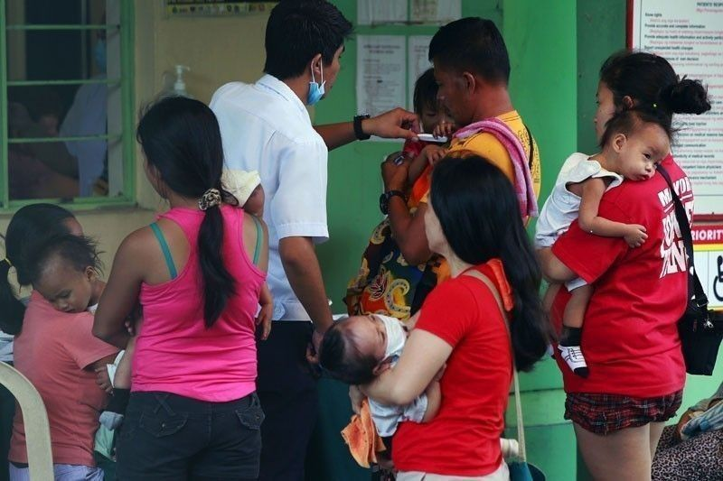

Accessible and Affordable?
Many Filipinos, especially those living in rural areas have limited to no access to basic healthcare. In rural areas, many people have to travel far to go to the nearest hospital. And with COVID, hospitals may reach bed capacity and there are many instances where people have to travel to neighboring provinces to get to a hospital with space for more patients. Aside from the lack of facilities in the area, there is also a lack of doctors. Most hospitals in rural and isolated areas are also small and less advanced than those in developed cities.
A lot of Filipinos cannot afford healthcare in the Philippines. A study in 2019 confirmed that many Filipinos cannot afford to pay their hospital bills and that 37% of respondents had to use their savings while 25% sought the help of their relatives to pay their medical bills. Moreover, 30% of respondents were not sure if they can afford the cost of regular checkups.

The Doctors to the Barrios is a program created to address the issue regarding the lack of doctors in rural areas. The program is run by the Department of Health and deploys doctors to various isolated and disadvantaged areas all around the Philippines. Initially, it was established to assist local government units without healthcare facilities. Over the years it served a large service by administering aid to particularly difficult areas. They serve in places such as fishing villages to steep mountaintop farmlands. Doctors are randomly assigned to locations that have problematic doctor-to-patient ratios.